This ACF(Autocorrelation function) & PACF( Partial Autocorrelation function) tool is supported in the Time Series Analysis App. It is used to compute and plot the autocorrelations and the partial autocorrelations of a series.
This tutorial uses App’s built-in sample project. To open this sample OPJU file:
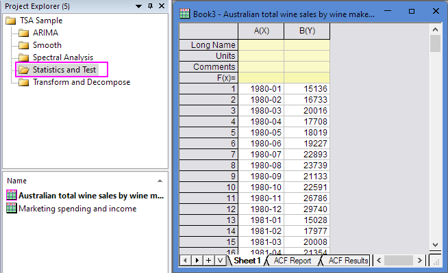
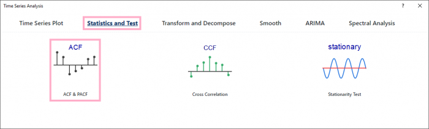
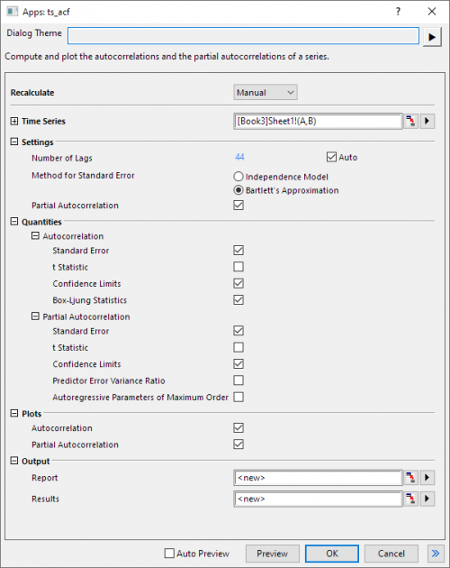
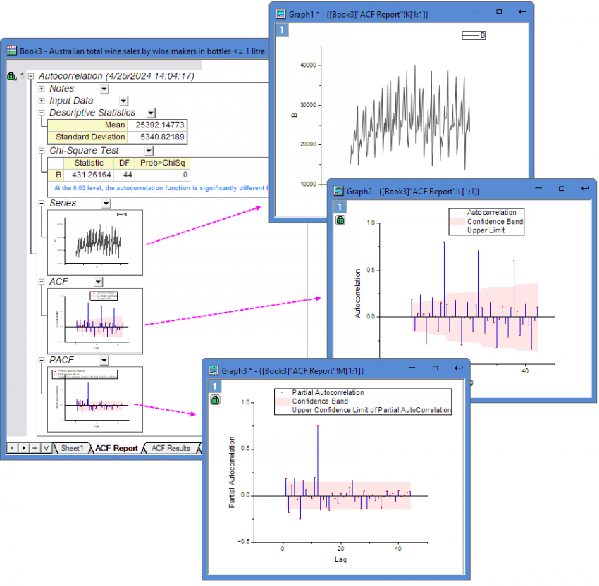
Autocorrelation calculates the correlation between a time series and the time series with lags. It can be used to determine which terms to be included in ARIMA model.
This app calls nag_tsa_auto_corr (g13abc) function [1] to calculate autocorrelation.
For a time series  , i=1, 2, ... n, the coefficient of lag k is:
, i=1, 2, ... n, the coefficient of lag k is:
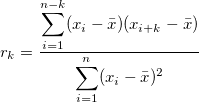
where
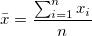
.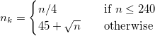
H0: The autocorrelation function is identically zero.
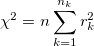
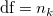
If P-value<0.05, the autocorrelation function is significantly different from zero.
1. Independent model
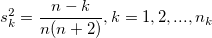
2. Bartlett model
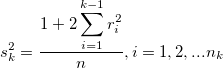
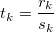
Lower confidence limit at lag k:
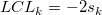
Upper confidence limit at lag k:
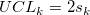
H0: First k autocorrelations are identically zero.
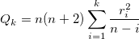
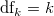
Use  distribution to calculate the P-value.
distribution to calculate the P-value.
If P-value<0.05, first k autocorrelations are significantly different from zero.
Partial autocorrelation calculates the correlation between a time series and the time series with lags excluding the influence of intermediate lags. It can be used to determine terms to include in ARIMA model.
This app calls nag_tsa_auto_corr_part (g13acc) function [3] to calculate partial autocorrelation.
For a time series , i=1, 2, ... n, partial autocorrelation coefficients can be solved by a recursive method [4]:
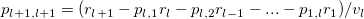
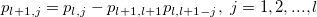
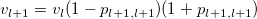
where
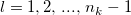
,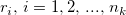
is autocorrelation,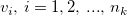
is the predictor error variance ratio,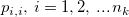
is partial autocorrelation values, and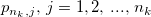
is the autoregressive parameters of maximum order.It was initialized by setting
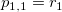
and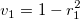
.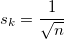
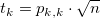
Lower confidence limit at lag k:

Upper confidence limit at lag k: